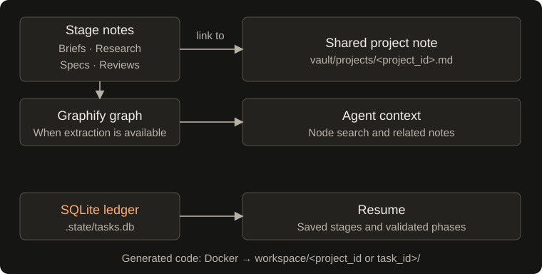

Projects & memory
Keep related tasks connected
Reuse a project ID across requests:
python main.py "Design a SQLite-backed task tracker" --project task-tracker
python main.py "Build a CSV import utility for a task tracker" --project task-tracker
BuildRelay creates vault/projects/task-tracker.md if needed and preserves existing project-note content. Produced briefs, reports, specifications, and implementation reviews include a visible project link and frontmatter:
project: "[[projects/task-tracker]]"
Project IDs accept letters, digits, underscores, and hyphens, and must start with a letter or digit. Project grouping links the notes and codebases: tasks sharing a project ID share the same workspace (workspace/<project_id>/), allowing successive tasks to build upon existing project modules and tests. Resumed runs reuse that task's workspace. Standalone tasks without a project ID use workspace/<task_id>/.

Open vault/ as an Obsidian vault to browse the notes and project wikilinks. Those links work independently of Graphify.
Graph updates are attempted after stage artifacts are saved. Graphify Markdown extraction requires its own supported backend; if extraction fails, BuildRelay logs a warning and continues with saved notes. Without a usable graph, knowledge queries may return no context.
Research source references
Odin records nodes retrieved from its initial task lookup and its search and neighbor-query tools. Search matches node IDs, labels, source-file paths, and properties. Each saved research report includes a Related vault sources section with relative Markdown links and corresponding wikilinks in its links frontmatter.
Source paths come from Graphify's source_file metadata, including that field inside properties when present. Only existing Markdown files inside the vault are listed; duplicate paths are removed, and missing files or paths outside the vault are omitted. The returned ResearchReport.vault_sources contains the same vault-relative paths, overriding any model-generated list.
These references identify retrieved graph context. They do not establish that the full source notes were read or that each finding is supported by a particular note. If no source files can be resolved, the report states that explicitly. Graph extraction still requires a working Graphify backend.
What stays on disk
Each new task gets a permanent ID shaped like task-<prompt-slug>-YYYYMMDD (e.g. task-build-csv-validator-20261026). The slug is derived from the prompt before any model call; resume keeps the same ID.
.state/tasks.db Local workflow ledger and checkpoints
.state/<task_id>.lock Local process lock file (may remain after exit)
.state/task.log Shared execution log
.state/search_cache/ Cached web search results (no expiry)
workspace/<project_or_task_id>/ Generated source, tests, docs, dependencies
vault/
├── tasks/<task_id>-brief.md Routing brief with the permanent task ID
├── research/research-<task_id>.md Research report, when Odin runs
├── specs/spec-<task_id>.md Specification, when Taghi runs
├── code-reviews/review-<task_id>.md Implementation summary and validated phases
├── projects/<project_id>.md Optional shared project note
└── .graphify/graph.json Knowledge graph, when available
The local .state/ directory, generated workspace files, stage notes, and graph artifacts are ignored by Git. Project notes under vault/projects/ are not currently ignored; review them before committing.